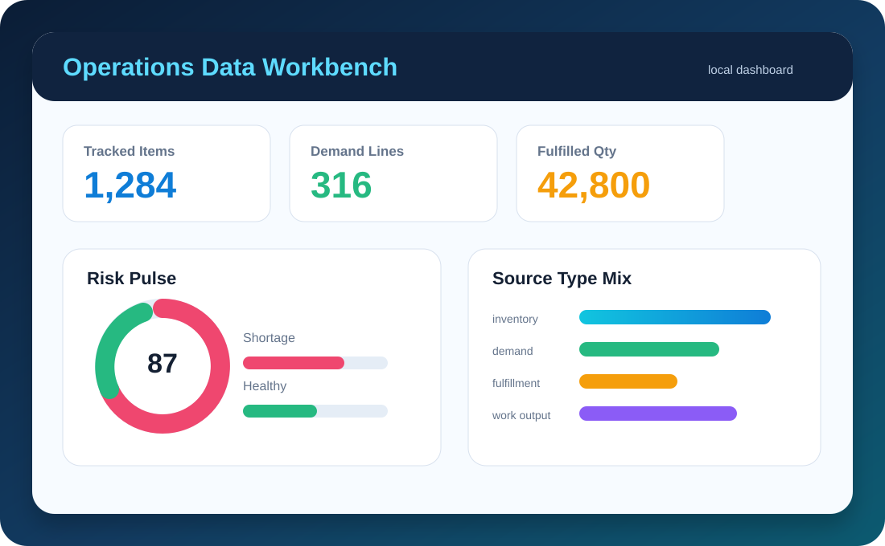
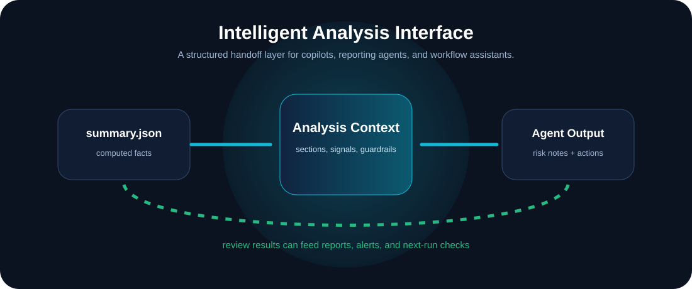

内容画像识别
Content-based classification
通过表头、字段组合和样本值识别业务类型，降低文件改名、模板改版带来的识别风险。
Uses headers, field combinations, and sample values to classify files even when names change.
面向库存、订单、发货、采购和生产数据的本地化处理工具。它把分散的表格导出转换为统一数据模型、运营指标、可视化看板和智能分析上下文。
A local-first toolkit that turns inventory, order, shipment, purchase, and production spreadsheets into a unified model, operational metrics, visual dashboards, and analysis-ready context.

通过表头、字段组合和样本值识别业务类型，降低文件改名、模板改版带来的识别风险。
Uses headers, field combinations, and sample values to classify files even when names change.
把不同系统导出的物料、数量、日期、客户、供应商等字段映射为标准结构。
Maps item, quantity, date, customer, and supplier fields into a standard data contract.
生成 HTML 看板和 JSON 摘要，用于本地查看、汇报展示或继续接入其他工作流。
Exports an HTML dashboard and JSON summary for local review, presentation, or downstream workflows.
输出结构化分析上下文，便于接入智能体进行风险解释、行动建议和自动报告。
Builds structured context for analysis agents, risk narratives, action suggestions, and reporting assistants.

看板摘要可以转换为分析上下文，交给外部智能体、报告助手或调度工作流使用。该接口适合扩展库存风险说明、订单履约解释、采购压力提示和下一步检查建议。
Dashboard summaries can be converted into analysis context for external agents, reporting assistants, or workflow orchestrators. The interface supports inventory risk explanation, fulfillment review, procurement pressure notes, and next-step checks.
python -m factory_excel_ops.cli analysis-context --summary output/summary.json --output output/analysis_context.json

当前以表格导入为入口，后续可通过适配器接入系统接口、数据库视图或定时导出目录。
The demo starts from spreadsheets and can be extended with adapters for APIs, database views, or scheduled export folders.
文件识别、字段别名和业务口径都可以沉淀到配置文件，方便不同工厂或不同业务域复用。
Classification signatures, field aliases, and business rules can be moved into config for reuse across teams.
项目提供干净打包脚本，便于复制为自己的业务版本，并保留核心 pipeline 与接口契约。
A clean package helper is included so teams can build their own edition while keeping the same core pipeline contract.